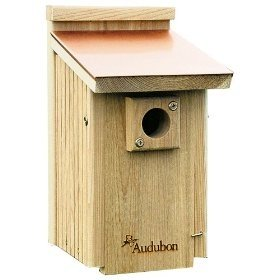
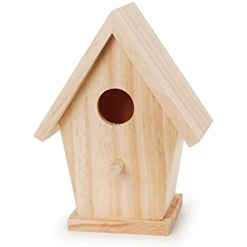
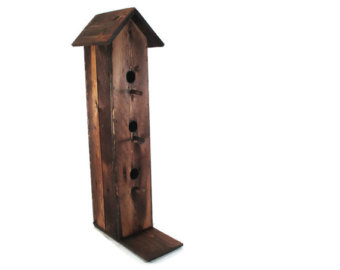

Birdhouses
Floor Size
Birds need a certain amount of floor space inside the house so the hatchlings have room to grow. For smaller songbirds like wrens, chickadees, titmice and nuthatches, 4" x 4" is usually fine. Larger birds need more floor space. Again, look for your target species' requirements.Like the one shown below.

Entrance Hole Size
A 1-1/2" diameter opening is probably the most common size, and most songbirds can use this opening size. Plus, it keeps out more aggressive non-native birds like house sparrows and starlings. Some birds can use an even smaller opening. It's good to know which species you want to attract, then research the minimum opening size the species requires. Like the one shown below.

Entrance Height
This is measured from the floor of the box to the bottom of the entrance hole, and this distance is important for keeping eggs and hatchlings out of reach of predators that may approach the hole and try to scoop inside the house. Many species need 5" or more. Like the one shown below.

Building a bird house may seem like an easy project, but there is much more to an attractive, bird-friendly house than a wooden box with an entrance hole. Before you build a bird house, you need to understand what nesting birds need and how best to meet those needs with the house you construct.
Build the right size house and hole dimensions. Different species of birds require different sized houses and entrance holes. Inside dimensions must be large enough to accommodate the incubating biard and a brood of growing young. Entrance hole size is especially important. If the hole is too small, the bird you built the box for won't be able to get inside. If the hole is too big, predatory birds and mammals will be able to get inside and reach the nest, and cavity-nesting birds may not use the house.
Bird Houses are often called nesting boxes because they provide a safe place for birds to build their nests, protected from the elements and predators. In the winter months, they give visiting birds a place to snuggle together for warmth away from the cold air.
Brayden
Hancock Highschool
Exploring Computer Science Pilot Couse,3rd Block
May, 2018
https://bkillough.github.io/instructional_website.html/